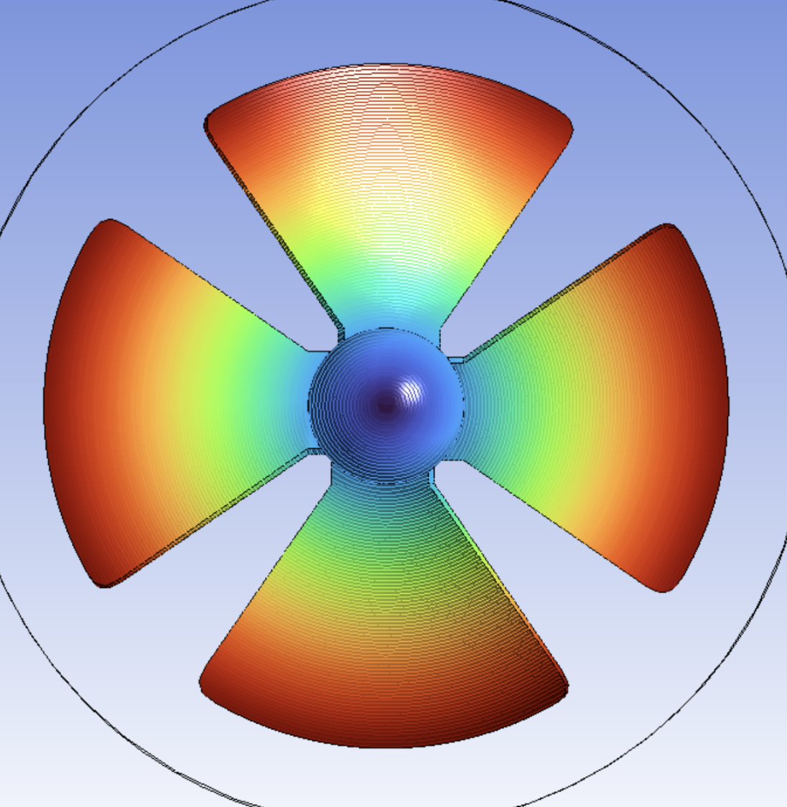
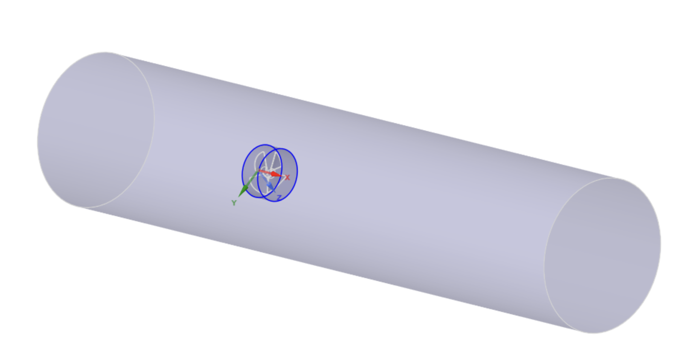
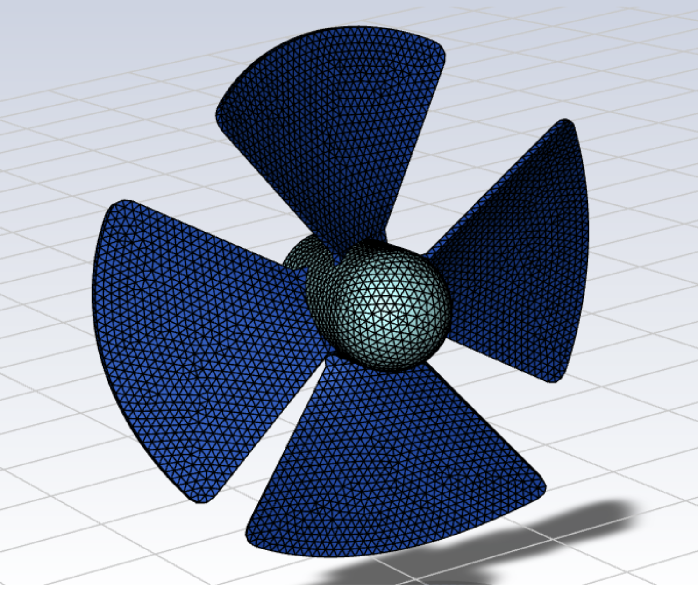
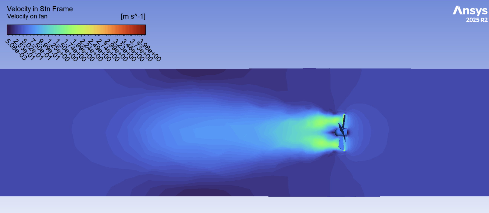
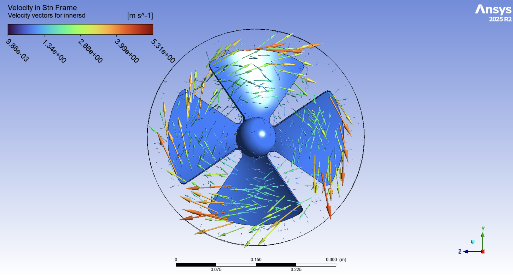
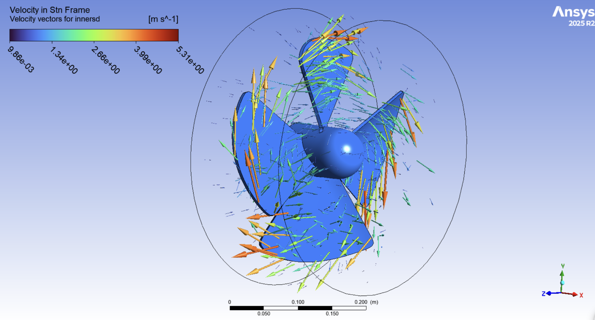
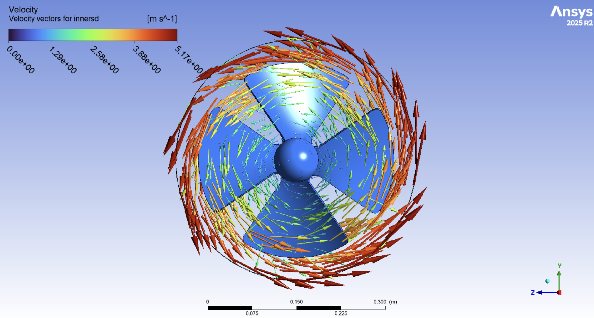
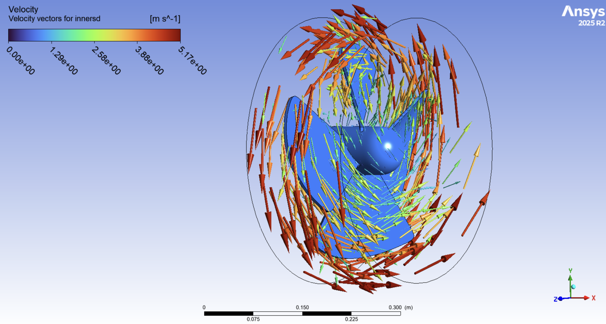

Rotating Fan Flow Simulation
Multiple Reference Frame simulation of rotating fan flow using ANSYS Fluent to analyze swirl generation and downstream momentum transfer.

Objective
The objective of this project was to simulate the flow around a rotating cooling fan using a Multiple Reference Frame (MRF) approach in ANSYS Fluent. The simulation focused on understanding how the rotating blades transfer momentum to the surrounding air, create swirl effects, and increase downstream flow velocity. The project also aimed to compare flow behavior in stationary and rotating reference frames while evaluating velocity and pressure distributions around the fan blades.
Mathematical Model / Numerical Solution Strategy
The simulation used the incompressible Navier-Stokes equations with a rotating reference frame applied to an inner cylindrical subdomain around the fan blades. This inner subdomain rotated at 240 RPM about the fan’s central axis, which allowed the fan motion to be modeled without physically rotating the mesh. The larger outer subdomain remained stationary to represent the surrounding airflow. The rotating and stationary regions were coupled using a steady-state Multiple Reference Frame (MRF) approach. The flow was modeled using the GEKO k-ω turbulence model with refined meshing near the fan blades and hub to better capture local velocity gradients and rotational flow behavior.


Results
The velocity contours on the fan surface show increasing velocity toward the blade tips, which is expected since tangential velocity scales with \( \omega r \). Velocity vectors in the stationary reference frame show strong circumferential flow near the blades that gradually transitions into more axial flow downstream as momentum is transferred to the surrounding fluid. In the rotating reference frame, the flow appears more aligned with the blade motion and less globally rotational due to the rotating coordinate system. Overall, the results are physically reasonable and demonstrate that the fan is accurately transferring momentum and swirl to the flow.



Velocity vectors in the stationary reference frame highlight strong circumferential motion generated by the rotating blades. Higher velocities are concentrated near the blade tips, while the surrounding flow begins transitioning downstream into a more axial wake structure.


The rotating inner subdomain captures the localized rotational flow behavior near the blades and hub. Flow within this region appears more aligned with the fan motion due to the rotating coordinate system used in the MRF formulation.